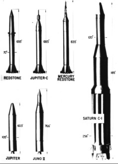

The Goett Committee did only what it was set up to do - study possible options and suggest objectives that NASA might pursue - but its findings did focus attention on manned circumlunar flight. Well before the committee discontinued its meetings, small groups at nearly all of the field centers had taken the initiative and started research toward that goal.
For example, during the summer of 1959, Gilruth formed a New Projects Panel within the Space Task Group under H. Kurt Strass.* Meeting twice in August, the panel members identified a number of areas for research and recommended that work begin immediately on an advanced manned capsule, a second-generation spacecraft crewed by three men and capable of reentering the atmosphere at speeds nearly as great as those needed to escape the earth's gravitational pull. The group was clearly planning a lunar spacecraft. Convinced that this should be the Space Task Group's next major project, the members further agreed that manned lunar landing should be the goal to design toward, and they assumed 1970 as a suitable target date.24
At the third meeting of the panel, on 28 September, Alan Kehlet presented some ideas for a lenticular reentry vehicle. (Later, he and William W. Petynia worked out enough details to apply for a patent on a capsule that appeared to be formed by two convex lenses and looked like a flying saucer.)25
The thinking of the New Projects Panel - and that was all Gilruth intended it to do, think - may have been premature, but it pointed out the need to raise the level and amount of manpower invested in planning advanced spacecraft systems.** At a Space Task Group management meeting on 2 November 1959, Gilruth assigned Robert O. Piland, Strass, John D. Hodge, and Caldwell Johnson to delve into "preliminary design of a multiman (probably 3)" circumlunar spacecraft and into mission analyses of trajectories, weights, and propulsion needs.26

Evolutionary launch vehicles leading to the Saturn C-1, left, and proposed Saturn C-2, right. On 18 January 1960, the Saturn project was accorded the government's highest priority rating for development and hardware procurement.
Piland's group focused on circumlunar flight as NASA's immediate objective. The team members dealt mostly with spacecraft design, but they also dipped fairly deeply into mission analyses. They adopted the idea of flying directly from the earth to the moon's surface. Again, however, these studies by the Space Task Group at Langley were only part of similar efforts going on concurrently at NASA Headquarters, at Langley, at Ames, at Lewis, and at several industrial contractors' plants. After the thinking, the task of picking and choosing what to do would begin.27
At Headquarters, toward the end of 1959, the Office of Program Planning and Evaluation, headed by Homer J. Stewart, drew up a "Ten Year Plan." Much of it, especially the part dealing with manned flight, evolved from the Goett Committee's priority list. In addition to a program of unmanned lunar and planetary exploration, it called for manned circumlunar flights and a permanent space station in earth orbit by the late 1960s. Lunar landings were projected for some time after 1970.
The Headquarters plan recommended developing more powerful engines and fitting them to huge Nova-class launch vehicles, as the most practical means of getting to the moon. Studies of rendezvous in space were under way as a part of the Saturn vehicle lunar mission analysis, but Stewart's group anticipated that manned lunar exploration would depend on Nova.28
To clarify some of the thinking about designing manned spacecraft and missions for them, Administrator Glennan in December 1959 set up another in the long string of committees (and there would be a plethora of these before Apollo took on its final form), this time to try to define more precisely just what would make up the Saturn rocket systems. With Abe Silverstein as chairman, this group consisted of Colonel Norman C. Appold of the Air Force, Abraham Hyatt and committee secretary Eldon W. Hall of NASA, von Braun of the Army's ABMA, George P. Sutton of the Department of Defense's Advanced Research Projects Agency, and Thomas C. Muse of the Office of the Director of Defense Research and Engineering. There had been a lot of talk about what kinds of propellants to use in the vehicle's upper stages. The Lewis laboratory had researched the potentials of liquid hydrogen in combination with liquid oxygen throughout the mid-1950s. Department of Defense and NASA research was aimed at prototypes of the Centaur rocket to prove the worth of these high-energy, low-weight propellant systems. The most important result of the committee was that Silverstein and his team hammered out a unanimous recommendation that all upper stages should be fueled with hydrogen-oxygen propellants. This determination, like many others, was a significant piece of the launch vehicle puzzle.29
Calendar year 1959 had been fruitful for those who saw the moon as manned space flight's next goal. NASA's leaders were coming around to that viewpoint and, on 7 January 1960 in a meeting with his staff, Glennan concurred that the follow-on program to Project Mercury should have an end objective of manned flight to the moon.30 NASA had its ten-year plan to present to Congress and a reasonable assurance of getting President Eisenhower's approval to speed up the development of a large launch vehicle.
* The members of the Strass group were Alan B. Kehlet, William S. Augerson, Robert G. Chilton, Jack Funk, Caldwell C. Johnson, Jr., Harry H. Ricker, Jr., and Stanley C. White.
** By June of 1959 the original Space Task Group complement of 45 had grown to 367. Gilruth anticipated that the personnel requirements for fiscal year 1961 would be 909; most of the new employees would be assigned to a maneuverable manned satellite, a manned orbiting laboratory, and a manned lunar expedition.
24. H. Kurt Strass to Chief, Flight Systems Div. (FSD), "First meeting of New Projects Panel, . . . Aug. 12, 1959," 17 Aug. 1959, and "Second meeting of New Projects Panel, . . . August 18, 1959," 26 Aug. 1959.
25. Strass to Chief, FSD, "Third meeting of New Projects Panel, . . . September 28, 1959 (Information)," 1 Oct. 1959. Application for a patent on a "Space and Atmospheric Reentry Vehicle" was filed on 13 April 1962 by Alan B. Kehlet, William W. Petynia, and Dennis F. Hasson; patent was issued 21 May 1963 (information from Marvin F. Matthews, 7 April 1976). Petynia, interview, Houston, 9 Dec. 1970; Strass to Chief, FSD, "Fourth meeting of New Projects Panel, . . . October 5, 1959 (Action requested)," 7 Oct. 1959.
26. Gilruth memo, "Organization of Space Task Group," 26 Jan. 1959; Paul E. Purser, "Space Task Group Complement Analysis," 8 June 1959; Gilruth to GSFC, Attn.: Bernard Sisco, "Langley Space Task Group FY 1961 personnel distribution," 12 June 1959, with enc.; Gilruth to staff, "Organization of Space Task Group," 3 and 10 Aug. 1959; Purser notes, "Summary of STG Organization and Mercury Management," n.d. (through 15 Jan. 1962); Purser to Gilruth, "Log for week of November 2, 1959," 10 Nov. 1959; Robert R. Gilruth and H. Kurt Strass, "Manned Space Flight, Present and Future Steps," Aero/space Engineering 19, no. 5 (1960): 16-17, 88-89.
27. Strass, interview, Houston, 30 Nov. 1966; Ivan D. Ertel, MSC History Off., notes on Caldwell C. Johnson interview, 10 March 1966; Johnson, interview, Houston, 9 Dec. 1966; Maxime A. Faget, interview, Houston, 15 Dec. 1969.
28. Glennan to Homer J. Stewart, no subj., 16 Jan. 1959; NASA Office of Program Planning and Evaluation, "The Ten Year Plan of the National Aeronautics and Space Administration," 18 Dec. 1959, p. 2. Cf. Stewart's memo of 18 July 1960 to Admin., NASA, "Vehicle Requirements for the Space Program." For part of the public background of NASA's first ten-year plan, see Lee A. DuBridge's 1959 lecture series at Columbia University, Introduction to Space (New York: Columbia Univ. Press, 1960), esp. charts and tables.
29. Glennan to Roy W. Johnson, 20 March 1959; anon., "Notes on Meeting on Vehicle Program Status, Friday, April 17, 1959"; Saturn Vehicle Team, "Report to the Administrator on Saturn Development Plan," 15 Dec. 1959, as cited in letter, Hyatt to Paine, 25 Nov. 1969.
30. Eugene M. Emme, NASA Hq., telephone query to JSC Historical Office, ca. 19 May 1975; Goett, telephone interview, 20 May 1975; Sally D. Gates, JSC Historical Off., memo for record, "Telephone conversation with Dr. Goett on 20 May," 27 May 1975.